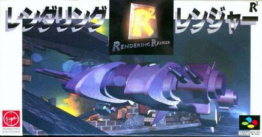
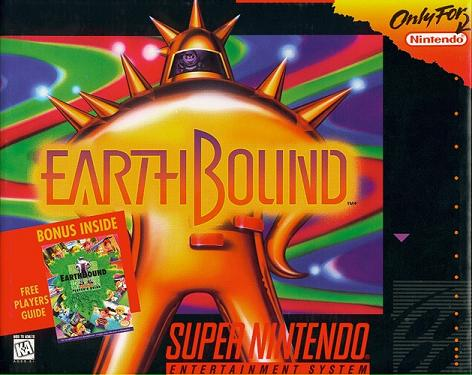
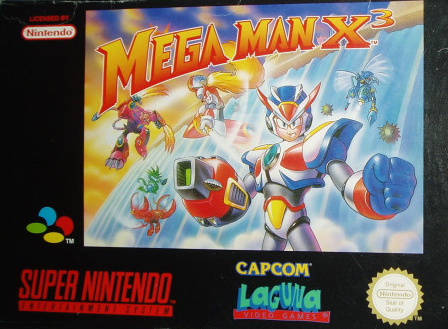

Rare and Valuable Games
Collecting for the SNES has become increasingly expensive in recent years due to the increasing interest in retro gaming. A lot of people who grew up with the SNES are now in their 30s, with decent salaries and disposable incomes, so due a mix of increasing demand, limited supply, and competition with other collecters, collecting for the SNES can be quite a pricey hobby! Below you will find out about some of the rarest SNES games. If you happen to have one of these sitting in a box in the attic, count yourself lucky!
Rendering Ranger R2
This one saw an extremely limited release. It was created by Manfred Trenz, the man behind the Turrican series, and the now defunct Rainbow studios. It was released only in Japan, late in the SNES lifecycle, and as such , few publishers were interested in the game. It had a print run of just 5000 copies. Complete in the box copies now go for over $1000!
Earthbound
Earthbound is an odd one. It's not actually that rare, so the price seems to be artificially high due to it's reputation as an obscure underrated classic. It's the sequel to the Mother series of games in Japan. Unlike most fantasy or sci fi themed RPGs, Earthbound takes place in a 1950's style Americana pastiche in a story about an alien invasion. In terms of gameplay and graphics, it's really nothing special, it's the story, characters and atmosphere that really make this game. It was never released in Europe. In America, due to some odd marketing decision, it was marketed as a gross out, slapstick kind of game, whereas in actuality, it's a much deeper and more introspective experience with some oddball humour. Complete in box, it can go for as much as $600 on ebay. Loose I've seen it go for several hundred of your hard earmed currency units. In recent years the price has come down a little due to digital re-releases on the WiiU Virtual Console and on the SNES Classic Mini.
Megaman X3
Megaman games have always commanded a high price due to their solid gameplay and large fanbase. X3 came quite late in the SNES life cycle. At that time, a lot of people had already moved on from the SNES to the Playstation, and 2D platformers were falling out of fashion, so the print run was very limited. It goes for about $250 on ebay for a loose copy and about twice that for a complete in box copy.